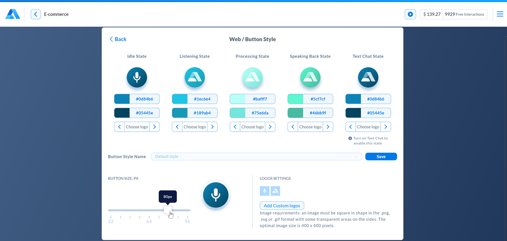
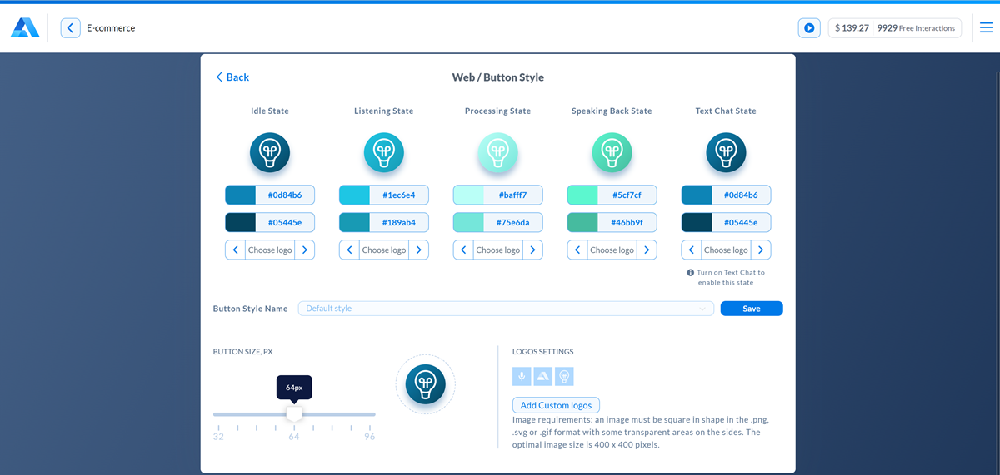

Customizing the AI assistant¶
You can customize your AI assistant to fit your app’s needs and color scheme. To access the customization options:
In Alan AI Studio, at the top of the code editor, click Integrations.
Click the Web, iOS or Android tab and use the options below to set up the necessary style and behavior for your AI assistant.
You can do the following:
(iOS/Android) Take screenshots
(iOS/Android) Keep the session active
(iOS/Android) Use the wake word
(iOS/Android) Use a custom wake word
(iOS/Android) Enable the QR code reader
(Web) Turn on the Alan AI Chat
Note
The AI assistant settings are configured at the project level. If you have several projects, you need to define settings for them separately.
You can define different settings for every environment in the project: Development, Testing or Production, and for each platform or SDK: web, iOS or Android.
Some of the customization options are available on specific pricing plans. For details, see Plans & pricing.
Enabling or disabling the AI assistant button¶
Use this option to show or hide the AI assistant button for users of your app.
Default |
on/visible |
Platforms |
Web/iOS/Android |
Enabling or disabling the Speech-to-Text panel¶
Use this option to show or hide the Speech-to-Text panel for users of your app. The Speech-to-Text panel is active when the user gives voice commands to the app, showing the recognized input, and helps with visual feedback.
Default |
on/visible |
Platforms |
Web/iOS/Android |
Note
The ‘Speech To Text’ panel is not displayed in mobile web browsers on the Web platform.
Recording intent audio¶
Use this option to record every voice command given by users. Audio recordings will be available in the project logs and in the Analytics view.
Recording audio is a great way to debug user flows and adjust your dialog script accordingly. We have taken extra security measures to ensure that all recordings are protected and available only to you as the project owner.
Default |
off |
Platforms |
Web/iOS/Android |
Playing the ready-to-listen sound¶
By default, when the user interacts with Alan AI, a special sound is played when Alan AI is ready to listen for user’s utterances. If you do not want the sound to be played, disable the Play ready-to-listen sound option.
Default |
on |
Platforms |
Web |
Changing the button position¶
The AI assistant button is draggable, so the user can change the button position in the app. If you do not want users to be able to drag the button around the page, disable this option.
Default |
on |
Platforms |
Web |
Saving the button position¶
Enable this option to keep the latest button position after the page refresh.
The button position is kept during the current dialog session. When a new dialog session starts, the button is put to the default position.
Default |
off |
Platforms |
Web |
Disabling button popups¶
Use this option to disable showing popups next to the AI assistant button in the app. For more details on popups, see Alan AI button popups.
Default |
on |
Platforms |
Web |
Changing the button visual style¶
Use this option to customize the visual style of the AI assistant button to match your brand design and color scheme. You can:
Default |
blue |
Platforms |
Web/iOS/Android |
Changing the button styles¶
By default, the AI assistant button is blue. If the default color does not fit the color scheme of your site or app, you can change it.
In the Integrations view, to the right of the Alan button visual style field, click Change.
In the Button Style section, choose the necessary colors for every button state.
To save the configured color scheme, in the Integrations view, to the right of the Button Code field, click Save and define the scheme name. You can switch between the default color scheme and saved color schemes at any time.
The button has the following states:
Idle State: the default state of the AI assistant button
Listening State: Alan AI is listening and waiting for the user’s input
Processing State: Alan AI is analyzing the user’s input
Speaking Back State: Alan AI is speaking back to the user
Text Chat State: the state of the button for the text chat
Text Chat Avatar State: the icon for the AI assistant in the full screen mode of the Alan AI Chat
Changing the button size¶
The default size of the AI assistant button displayed in the app is 64px. You can define the necessary button size directly in Alan AI Studio. In the Button Size section, drag the slider right or left to make the button larger or smaller.
Replacing the Alan AI logo¶
To customize the look and feel of the AI assistant button, you can replace the Alan AI logo on top of it with a custom icon or your company logo.
In the Integrations view, to the right of the Alan button visual style field, click Change.
In the Logos settings section, click Add custom logos and select one or more image files.
Use the right and left controls below each button state to assign the image to this state.
For best results, the images you select must meet the following requirements:
The image must be square.
The recommended image size is 400x400 pixels.
The images must be in the PNG, GIF or SVG format.
The images should have transparent areas around the icon or logo.
Note
The SVG format is currently supported only on the Web platform.
To switch back to the default logo, select the initial image for the necessary button state.
Changing the voice type, accent, pitch and rate¶
Use this option to change Alan’s voice:
In the Integrations view, to the right of the Alan voice field, click Change.
In the languages list, select the language for the AI assistant, the regional accent and the voice type.
To define the speaking rate (speed), use the upper slider. You can select a value in the range 0.3 to 2.5, where 1 is normal speed. For example, to set the speaking rate to half as fast, drag the slider to 0.5. To set the speaking rate to twice as fast, drag the slider to 2.
To define the speaking pitch, use the lower slider. You can select a value in the range -20 to 20, where 20 means increase 20 semitones from the original pitch, -20 means decrease 20 semitones from the original pitch.
Default |
English, US, Alan voice, normal speed (1), normal pitch (0) |
Platforms |
Web/iOS/Android |
Setting the microphone timeout¶
Use this option to set the period after which the AI assistant button is automatically deactivated. This option helps users save on battery/traffic and avoid unwanted commands. The microphone timeout functionality pairs great with using the wake word.
Default |
10s |
Platforms |
Web/iOS/Android |
Taking screenshots¶
Use this option to take screenshots of the app with every voice command given by users. Screenshots will be available in the project logs and in the *Analytics view. Taking screenshots is a great way to debug user flows and adjust your dialog script accordingly. We have taken extra security measures to ensure that all screenshots are protected and available only to you as the project owner.
Default |
off |
Platforms |
iOS/Android |
Keeping the session active¶
Use this option to keep the dialog session active even when the user puts the app in the background mode. If this option is enabled, the user will be able to continue the conversation with the AI assistant even while actively using other apps.
Default |
off |
Platforms |
iOS/Android |
Using the wake word¶
Use this option to allows users to activate the AI assistant in the app with a special word or phrase.
The default wake words are Hey, Alan or OK, Alan. However, you can replace the default wake words with custom ones.
To enable the wake word:
In the Integrations view, to the right of the Wake word field, click Change.
To let users activate the AI assistant with a wake word, turn on the Enable wake word option.
To allow using the wake word even if the app is put in the background mode, enable the Use wake word in background option.
Mind the following:
Together with this option, you must turn on the Enable wake word and Keep active while the app is in the background options. Otherwise, users will not be able to activate the AI assistant with a wake word when the app is in the background mode.
(For iOS) To allow the background mode for an iOS app, in your XCode project, go to the Signing and Capabilities tab. In the top left corner, click + Capability and in the capabilities list, double-click Background Modes. In the Modes list, select the Audio, AirPlay, and Picture in Picture check box.
The app running in the background mode will remain collapsed. To bring the app to the foreground, the user will need to tap the microphone bar at the top of the device screen or the app icon itself.
VoIP apps having a higher priority such as Skype or telephone can interrupt dialog sessions. If this happens, the wake word will not work until the user re-opens the app.
Using a custom wake word¶
At present, custom wake word setup involves the Alan AI team.
To use a custom wake word:
Contact the Alan AI team to obtain correct config data for the wake word you want to use.
In the Integrations view, select the iOS or Android platform.
To the right of Wake word field, click Change.
Switch the Enable wake word toggle to the On position.
To the right of the Wake word field, click Create custom wake word.
In the Wake word name field, enter the name for the wake word you create.
From the Acoustic model list, select the necessary acoustic model.
In the Wake word model field, insert the JSON object obtained from the Alan AI team.
Click Create wake word.
Note
The custom wake word (version 3.0) requires specific versions of Alan AI SDK. You can get the latest version here:
Alan AI SDK for iOS (version 3.7.0 or higher)
Alan AI SDK for Android (version 4.21.0 or higher)
Alan AI SDK for Flutter (version 4.1.0 or higher)
Alan AI SDK for React Native (version 2.1.0 or higher)
Alan AI SDK for Ionic (version 3.0.0 or higher)
Default |
off |
Platforms |
iOS/Android |
Enabling the QR code reader¶
Use this option to enable the QR code reader and test how an AI assistant works in the app.
With this option enabled, you can tap the Alan AI button in the app, hold it for 8 seconds and scan the QR code in Alan AI Studio with the device camera to connect to the AI project and evaluate the conversational experience.
Default |
off |
Platforms |
iOS/Android |
Turning on the Alan AI Chat¶
Use this option to display a chat for the AI assistant in the app. The chat allows users to interact with the AI assistant through text or use two input channels - voice and text - at the same time.
For details, see Enabling the Alan AI Chat